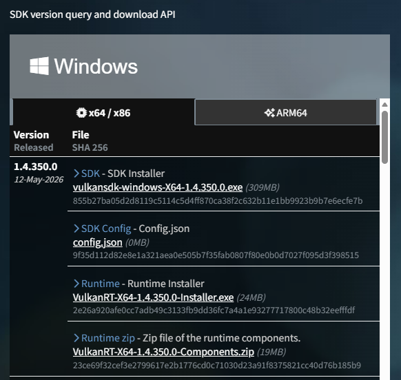
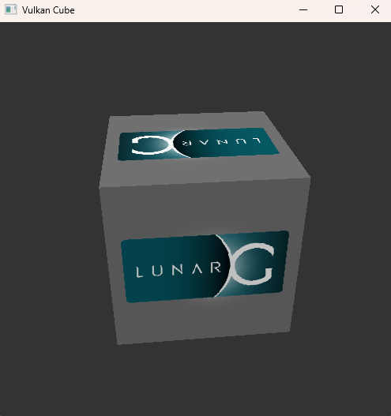
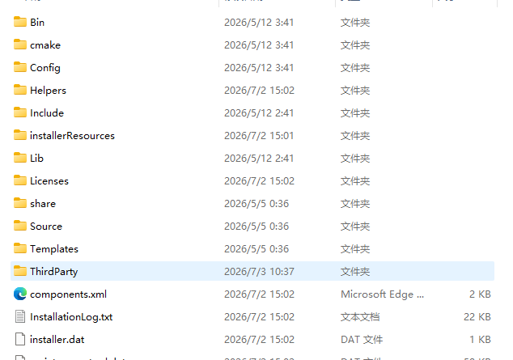
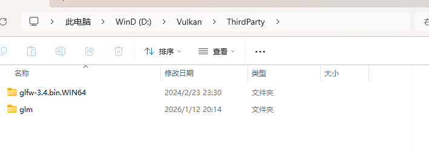
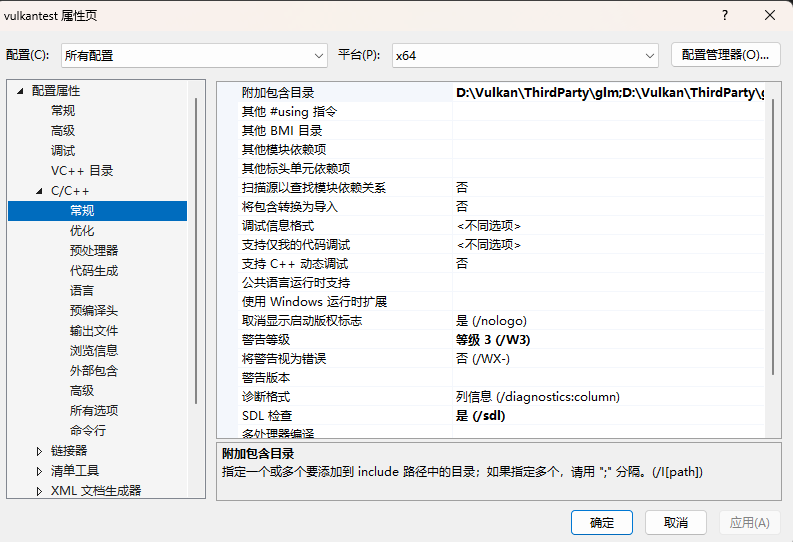
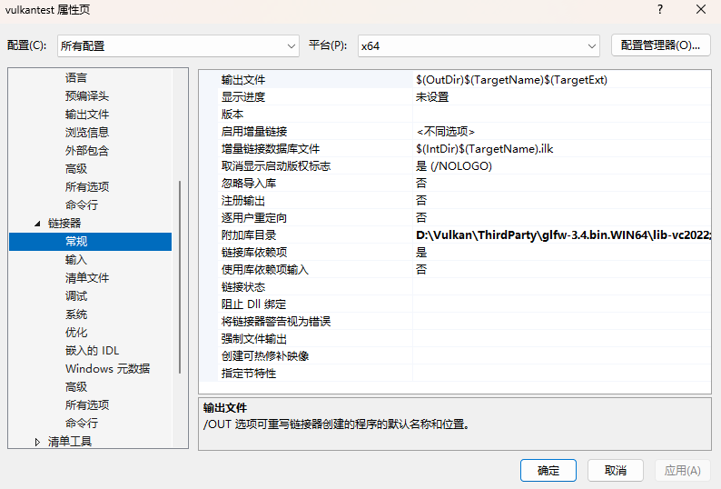
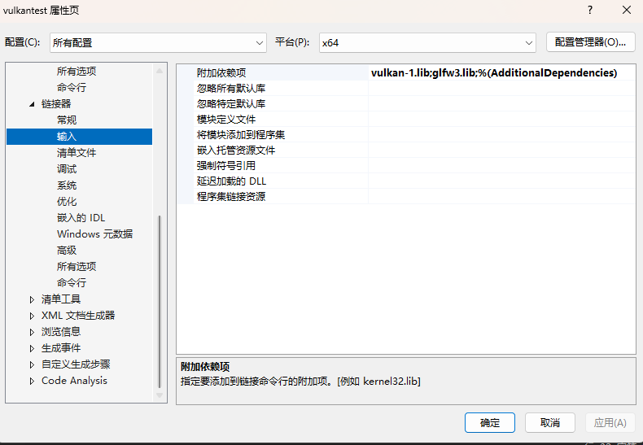
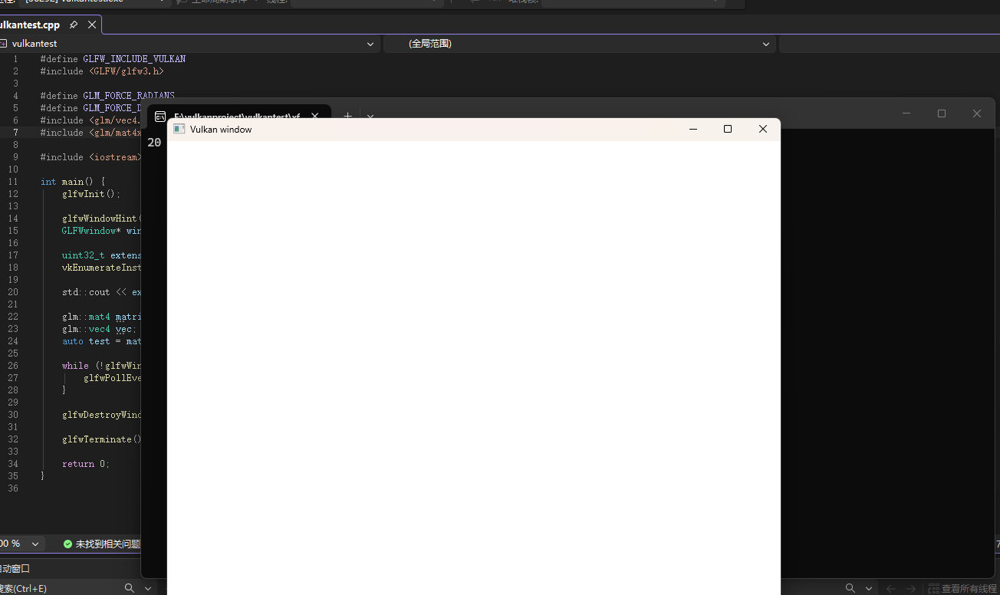

1.Vulkan SDK下载安装
登录LunarG网站https://vulkan.lunarg.com/, 选择Windows平台下的最新SDK下载安装（.exe），配置好安装路径。

进入安装目录中的Bin文件夹找到vkcube.exe，若能运行则安装成功。

2.下载GLFW与GLM库
GLFW库：https://www.glfw.org/download.html下载64位即可
GLM库：https://github.com/g-truc/glm
在Vulkan安装路径下创建ThirdParty文件夹

将GLFW与GLM解压后的文件夹复制到该文件夹中。

3.Visual Studio2026配置
创建一个控制台应用，进入项目属性。将配置改为所有配置，平台为x64

在C/C++>常规中附加包目录添加：（注意换成自己的安装路径）
1 | D:\Vulkan\ThirdParty\glm |

在链接器>常规>附加包目录中添加：
1 | D:\Vulkan\ThirdParty\glfw-3.4.bin.WIN64\lib-vc2022 |

在输入附加依赖项中添加：
1 | vulkan-1.lib |
确定即可。
测试代码：
1 |
|
出现下图情况即为成功：
